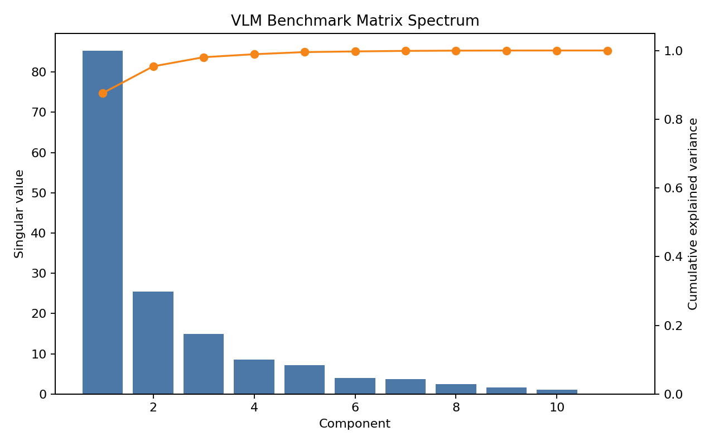
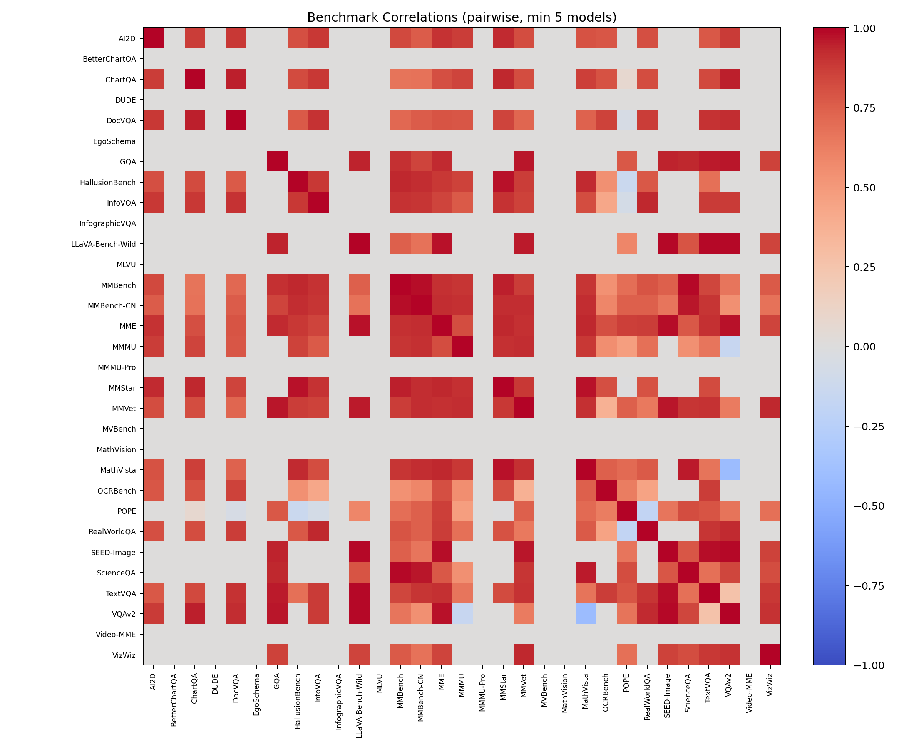
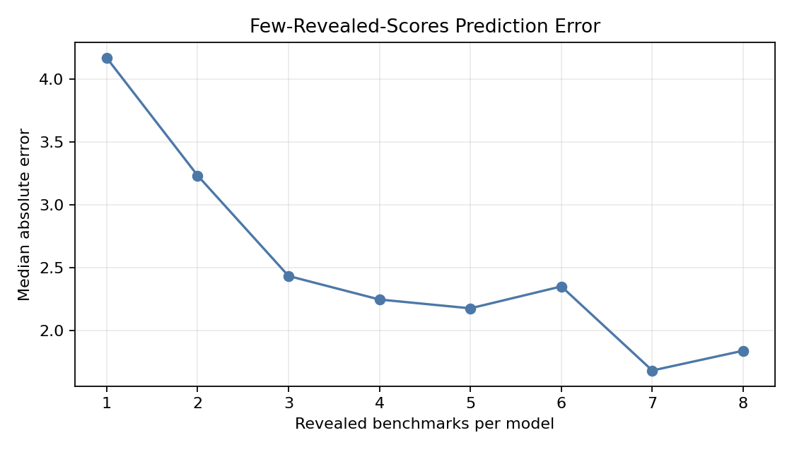

nanochat-llava benchmark selection report
Use four vision benchmarks for default development runs, with a five-benchmark periodic suite when one more run is affordable.
The selected default is MMStar, ScienceQA, ChartQA, MMMU. The periodic suite adds TextVQA to restore direct OCR and scene-text coverage. The recommendation is based on a 48-model by 31-benchmark score matrix, holdout prediction tests, low-rank structure, greedy subset selection, and a May 2026 frontier refresh covering GPT-5.5, Claude Opus 4.7, Gemini 3.x, Kimi K2.6, and Qwen3.6.
2026 Frontier Refresh
The refresh uses current public model pages and official model cards where they expose compatible multimodal scores. Missing rows stay missing: Grok 4.3, DeepSeek V4 Pro, and GLM-5.1 are tracked in the audit table, but they are not inserted into the VLM score matrix without official vision benchmark rows.
What changed
GPT-4V, GPT-4o-20240513, Claude 3.x, Gemini 1.x, and Qwen2-era rows are now historical calibration, not frontier evidence. Current public frontier vision evidence is concentrated around MMMU-Pro, CharXiv, OSWorld-Verified, MathVision, MathVista, RealWorldQA, MMBench, and HallusionBench.
The practical recommendation is to keep the original k=4/k=5 suite for cheap regression tracking, then run MMMU-Pro and CharXiv periodically to catch failures that older benchmarks can miss.
Source policy
Rows come from OpenAI, Google DeepMind, Moonshot AI, Qwen, Anthropic, xAI, DeepSeek, and Z.ai primary pages. Third-party leaderboard claims were not inserted unless a primary model page or model card exposed the same row.
| Model | Provider | Weights | MMMU-Pro | Relative score | Source |
|---|---|---|---|---|---|
| Gemini-3.5-Flash | Google DeepMind | closed | 83.6 | official_model_release | |
| GPT-5.5 | OpenAI | closed | 81.2 | official_model_release | |
| Gemini-3.1-Pro | Google DeepMind | closed | 80.5 | official_model_release | |
| Kimi-K2.6 | Moonshot AI | open-weight | 79.4 | official_model_card | |
| Qwen3.6-35B-A3B | Qwen | open-weight | 75.3 | official_model_card | |
| Claude-Opus-4.7 | Anthropic | closed | 75.2 | official_competitor_comparison |
| Model | Provider | Weights | MMMU-Pro | CharXiv | OSWorld-Verified | MathVision | MathVista | MMMU | RealWorldQA | MMBench | HallusionBench |
|---|---|---|---|---|---|---|---|---|---|---|---|
| Gemini-3.5-Flash | Google DeepMind | closed | 83.6 | 84.2 | 78.4 | ||||||
| GPT-5.5 | OpenAI | closed | 81.2 | 84.1 | 78.7 | ||||||
| Gemini-3.1-Pro | Google DeepMind | closed | 80.5 | 83.3 | 76.2 | ||||||
| Claude-Opus-4.7 | Anthropic | closed | 75.2 | 82.1 | 78 | ||||||
| Kimi-K2.6 | Moonshot AI | open-weight | 79.4 | 80.4 | 73.1 | 87.4 | |||||
| Qwen3.6-35B-A3B | Qwen | open-weight | 75.3 | 86.4 (mini) | 81.7 | 85.3 | 92.8 (EN-DEV-v1.1) | 69.8 |
| Model | Provider | Weights | Modalities | Audit status | Decision | Source |
|---|---|---|---|---|---|---|
| GPT-5.5 | OpenAI | closed | text,image,tools | scored | Current OpenAI frontier release with official OSWorld and MMMU-Pro rows. | source |
| Claude-Opus-4.7 | Anthropic | closed | text,image,tools | scored | Anthropic release confirms substantially better vision; compatible benchmark rows were taken from Google DeepMind's public comparison table. | source |
| Gemini-3.5-Flash | Google DeepMind | closed | text,image,tools | scored | Latest Gemini page lists Gemini 3.5 Flash, Gemini 3 Flash, and Gemini 3.1 Pro benchmark rows. | source |
| Gemini-3.1-Pro | Google DeepMind | closed | text,image,tools | scored | Included because it is the stronger Pro-family Gemini row in the public table. | source |
| Grok-4.3 | xAI | closed | text,image | no compatible official VLM scores | Current xAI docs list Grok 4.3 as the recommended flagship and note older Grok 4 variants retired, but do not publish comparable vision benchmark scores. | source |
| Kimi-K2.6 | Moonshot AI | open-weight | text,image,video,tools | scored | Official Moonshot AI model card publishes MMMU-Pro, CharXiv, MathVision, OSWorld, and modality details. | source |
| Qwen3.6-35B-A3B | Qwen | open-weight | text,image,video | scored | Official Qwen model card publishes MMMU, MMMU-Pro, MathVista, RealWorldQA, MMBench, and HallusionBench rows. | source |
| DeepSeek-V4-Pro | DeepSeek | open-weight | text | not a VLM row | Official Hugging Face listing is Text Generation; no compatible image-text benchmark rows found for the vision report. | source |
| GLM-5.1 | Z.ai | open-weight | text | not a VLM row | Official Hugging Face listing is Text Generation and the published focus is agentic engineering/coding, not VLM scoring. | source |
Recommended Suites
The greedy search rewards non-redundant coverage of visual reasoning, science/diagram QA, chart reasoning, and multidiscipline reasoning. TextVQA is the most useful fifth benchmark because OCR/text-reading is otherwise implicit.
Default k=4 suite
Median absolute error falls to 1.88, with 81.8% of held-out scores within five points. This is the best deterministic four-benchmark suite found in the search.
Periodic k=5 suite
Adding TextVQA lowers median absolute error to 1.59 and improves within-five-point accuracy to 89.2%.
| Suite | Benchmarks | MedAE | MedAPE | Within +/-5 | Interpretation |
|---|---|---|---|---|---|
| Greedy k=4 default | MMStarScienceQAChartQAMMMU | 1.88 | 2.69 | 81.8% | Best deterministic four-benchmark suite. |
| Greedy k=5 periodic | MMStarScienceQAChartQAMMMUTextVQA | 1.59 | 2.36 | 89.2% | Adds explicit scene-text OCR coverage. |
| Vibe baseline | MMStarOCRBenchChartQAScienceQA | 2.02 | 3.08 | 80.3% | Close control, but MMMU is the stronger fourth signal than OCRBench. |
| nanoVLM subset | MMStarScienceQAChartQAMMMUTextVQA | 1.59 | 2.45 | 89.4% | Matches the practical five-benchmark recommendation. |
Validation Results
The predictor was evaluated by hiding known scores and estimating them from the remaining matrix. The default blend keeps regression as the main signal and low-rank reconstruction as a stabilizer.
| k | Added | Selected suite | Held-out n | MedAE | MedAPE | Within +/-5 | AE improvement |
|---|---|---|---|---|---|---|---|
| 1 | MMStar | MMStar | 539 | 2.88 | 4.20 | 67.3% | |
| 2 | ScienceQA | MMStarScienceQA | 527 | 2.44 | 3.67 | 74.4% | 0.44 |
| 3 | ChartQA | MMStarScienceQAChartQA | 498 | 2.04 | 3.15 | 79.1% | 0.41 |
| 4 | MMMU | MMStarScienceQAChartQAMMMU | 455 | 1.88 | 2.69 | 81.8% | 0.15 |
| 5 | TextVQA | MMStarScienceQAChartQAMMMUTextVQA | 415 | 1.59 | 2.36 | 89.2% | 0.29 |
| 6 | InfoVQA | MMStarScienceQAChartQAMMMUTextVQAInfoVQA | 393 | 1.49 | 2.25 | 89.8% | 0.10 |
| 7 | OCRBench | MMStarScienceQAChartQAMMMUTextVQAInfoVQAOCRBench | 362 | 1.47 | 2.20 | 90.3% | 0.02 |
| 8 | AI2D | MMStarScienceQAChartQAMMMUTextVQAInfoVQAOCRBenchAI2D | 325 | 1.47 | 2.21 | 90.2% | -0.00 |
Coverage And Source Mix
The matrix uses official project reports, model cards, and vendor reports. Coverage is strongest for MMMU, MathVista, TextVQA, AI2D, MMBench, and MMVet; video benchmarks remain thin.
Benchmark coverage
| Benchmark | Models | Coverage |
|---|---|---|
| MMMU | 43 | |
| MathVista | 40 | |
| TextVQA | 40 | |
| AI2D | 37 | |
| MMBench | 35 | |
| MMVet | 35 | |
| DocVQA | 32 | |
| MMStar | 31 | |
| OCRBench | 31 | |
| ChartQA | 29 | |
| HallusionBench | 27 | |
| MMBench-CN | 25 | |
| InfoVQA | 22 | |
| MME | 20 | |
| RealWorldQA | 20 | |
| VQAv2 | 18 | |
| POPE | 17 | |
| ScienceQA | 12 | |
| GQA | 8 | |
| LLaVA-Bench-Wild | 8 | |
| SEED-Image | 8 | |
| VizWiz | 8 | |
| BetterChartQA | 4 | |
| DUDE | 4 | |
| EgoSchema | 4 | |
| InfographicVQA | 4 | |
| MMMU-Pro | 3 | |
| MathVision | 2 | |
| MLVU | 1 | |
| MVBench | 1 | |
| Video-MME | 1 |
Benchmark clusters
Source type mix
| Type | Rows | Share |
|---|---|---|
| official_model_card | 217 | 36.9% |
| official_project_report | 190 | 32.3% |
| official_project_report_comparison | 116 | 19.7% |
| official_vendor_report | 48 | 8.2% |
| official_model_card_comparison | 17 | 2.9% |
Low-Rank And Correlation Structure
A compact latent performance axis explains most shared variance, but the second and third components still matter for separating OCR, chart, science, and general-reasoning behavior.



| Rank | MedAE | MedAPE | Within +/-5 |
|---|---|---|---|
| 1 | 2.97 | 4.32 | 68.7% |
| 2 | 3.53 | 5.10 | 63.4% |
| 3 | 3.55 | 5.23 | 62.1% |
| 4 | 3.87 | 5.72 | 58.9% |
| 5 | 4.05 | 5.81 | 56.9% |
| 6 | 4.72 | 6.91 | 52.3% |
| 7 | 5.21 | 7.44 | 48.4% |
| 8 | 5.66 | 7.96 | 45.9% |
| Regression wt. | SVD wt. | MedAE | MedAPE | Within +/-5 | Note |
|---|---|---|---|---|---|
| 0 | 1 | 3.53 | 5.10 | 63.4% | |
| 0.1 | 0.9 | 3.43 | 5.08 | 64.4% | |
| 0.2 | 0.8 | 3.26 | 4.90 | 65.7% | |
| 0.3 | 0.7 | 3.14 | 4.75 | 66.3% | |
| 0.4 | 0.6 | 3.02 | 4.64 | 65.8% | |
| 0.5 | 0.5 | 3.02 | 4.64 | 66.9% | |
| 0.6 | 0.4 | 2.95 | 4.47 | 67.0% | default |
| 0.7 | 0.3 | 2.93 | 4.43 | 67.5% | best |
| 0.8 | 0.2 | 2.93 | 4.40 | 67.6% | |
| 0.9 | 0.1 | 2.99 | 4.47 | 67.4% | |
| 1 | 0 | 2.95 | 4.47 | 67.1% |
Hard-To-Predict Benchmarks
Video, harder chart reasoning, and sparse document benchmarks have the largest held-out errors. They should be run directly when those capabilities become product-critical.
| Benchmark | Cluster | Coverage | Held-out MedAE | Held-out MedAPE | Top peer predictors | Notes |
|---|---|---|---|---|---|---|
| Video-MME | Video | 1 | 19.34 | 37.12 | No stable peers | video understanding |
| MLVU | Video | 1 | 16.24 | 29.42 | No stable peers | multi-task long video understanding |
| BetterChartQA | Charts and plots | 4 | 16 | 27.12 | No stable peers | harder chart reasoning |
| MathVision | Math and science | 2 | 8.77 | 34.98 | No stable peers | hard visual math reasoning |
| EgoSchema | Video | 4 | 7.90 | 12.62 | No stable peers | long video understanding |
| VizWiz | Natural image VQA | 8 | 7.26 | 13.77 | MMVet;VQAv2;TextVQA;GQA;SEED-Image | assistive image QA |
| DUDE | Document OCR | 4 | 6 | 13.29 | No stable peers | multi-page document understanding |
| VQAv2 | Natural image VQA | 18 | 5.77 | 7.54 | LLaVA-Bench-Wild;SEED-Image;MME;GQA;ChartQA | natural image VQA |
| LLaVA-Bench-Wild | instruction_judge | 8 | 5.67 | 7.43 | TextVQA;VQAv2;SEED-Image;MME;MMVet | in-the-wild instruction following |
| InfographicVQA | Document OCR | 4 | 5.05 | 6.29 | No stable peers | infographic document QA |
| OCRBench | Scene text OCR | 31 | 4.97 | 6.11 | TextVQA;DocVQA;MME;MMStar;MathVista | OCR aggregate benchmark |
| InfoVQA | Document OCR | 22 | 4.30 | 6.51 | RealWorldQA;DocVQA;MMStar;MMBench;VQAv2 | infographic document QA |
| SEED-Image | General perception | 8 | 4.05 | 6.72 | VQAv2;MME;TextVQA;LLaVA-Bench-Wild;MMVet | general image understanding |
| ScienceQA | Math and science | 12 | 4.02 | 5.32 | MMBench;MMBench-CN;MathVista;GQA;MMVet | science and diagram-style QA |
| MathVista | Math and science | 40 | 4.01 | 6.93 | MMStar;ScienceQA;MME;HallusionBench;MMBench-CN | visual math reasoning |
| MME | General perception | 20 | 3.90 | 5.91 | SEED-Image;LLaVA-Bench-Wild;VQAv2;MMStar;GQA | general perception and cognition aggregate |
| RealWorldQA | Real-world perception | 20 | 3.72 | 5.62 | InfoVQA;VQAv2;MME;TextVQA;DocVQA | real-world visual perception |
| MMBench-CN | General reasoning | 25 | 3.32 | 4.75 | MMBench;ScienceQA;HallusionBench;MMStar;MME | Chinese MMBench variant |
| MMMU | General reasoning | 43 | 3.28 | 6.49 | MMVet;MMStar;MMBench-CN;MMBench;MathVista | multidiscipline multimodal reasoning |
| TextVQA | Scene text OCR | 40 | 3.08 | 4.10 | LLaVA-Bench-Wild;SEED-Image;GQA;DocVQA;MME | scene text OCR QA |
| AI2D | Math and science | 37 | 2.83 | 3.41 | MME;VQAv2;MMStar;InfoVQA;MMMU | science diagrams |
| ChartQA | Charts and plots | 29 | 2.74 | 3.54 | VQAv2;DocVQA;MMStar;InfoVQA;MathVista | chart and plot reasoning |
| MMVet | Judge-style reasoning | 35 | 2.42 | 3.81 | SEED-Image;LLaVA-Bench-Wild;GQA;VizWiz;MMMU | LLM-judge multi-skill benchmark |
| MMStar | General reasoning | 31 | 1.97 | 3.25 | HallusionBench;MathVista;MMBench;MME;ChartQA | vision-indispensable multimodal reasoning |
| MMBench | General reasoning | 35 | 1.57 | 1.89 | ScienceQA;MMBench-CN;MMStar;HallusionBench;MME | general multimodal reasoning |
| DocVQA | Document OCR | 32 | 1.53 | 2.11 | ChartQA;VQAv2;InfoVQA;TextVQA;MMStar | document OCR and layout QA |
| POPE | hallucination_grounding | 17 | 1.43 | 1.62 | MME;ScienceQA;GQA;TextVQA;MMBench-CN | object hallucination probe |
| HallusionBench | hallucination_grounding | 27 | 1.39 | 2.87 | MMStar;MMBench;MMBench-CN;MathVista;MME | hallucination and visual grounding |
| GQA | Natural image VQA | 8 | 0.46 | 0.72 | VQAv2;MMVet;LLaVA-Bench-Wild;TextVQA;SEED-Image | compositional image QA |
| MMMU-Pro | General reasoning | 3 | No stable peers | harder multimodal reasoning | ||
| MVBench | Video | 1 | No stable peers | video understanding |
Observed Score Matrix
Cells show normalized scores on a 0-100 scale. Empty cells were not present in the collected official sources and were not fabricated in the matrix.
| Model | AI2D | BetterChartQA | ChartQA | DUDE | DocVQA | EgoSchema | GQA | HallusionBench | InfoVQA | InfographicVQA | LLaVA-Bench-Wild | MLVU | MMBench | MMBench-CN | MME | MMMU | MMMU-Pro | MMStar | MMVet | MVBench | MathVision | MathVista | OCRBench | POPE | RealWorldQA | SEED-Image | ScienceQA | TextVQA | VQAv2 | Video-MME | VizWiz |
|---|---|---|---|---|---|---|---|---|---|---|---|---|---|---|---|---|---|---|---|---|---|---|---|---|---|---|---|---|---|---|---|
| Gemini-1.5-Pro | 94.4 | 65.8 | 87.2 | 46.0 | 93.1 | 72.2 | 45.6 | 81.0 | 81.0 | 74.6 | 73.8 | 62.2 | 59.1 | 64.0 | 63.9 | 75.4 | 70.4 | 78.7 | 80.2 | ||||||||||||
| Qwen2-VL-7B | 83.0 | 83.0 | 94.5 | 50.6 | 76.5 | 80.7 | 80.5 | 83.1 | 54.1 | 30.5 | 60.7 | 62.0 | 16.3 | 58.2 | 84.5 | 88.1 | 70.1 | 84.3 | |||||||||||||
| InternVL2.5-1B | 69.3 | 75.9 | 84.8 | 39.0 | 56.0 | 68.4 | 66.3 | 69.6607 | 40.9 | 50.1 | 48.8 | 43.2 | 78.5 | 89.9 | 57.5 | 72.0 | |||||||||||||||
| InternVL2.5-26B | 86.4 | 87.2 | 94.0 | 55.0 | 79.8 | 84.2 | 85.5 | 84.7607 | 60.0 | 66.5 | 65.0 | 67.7 | 85.2 | 90.6 | 74.5 | 82.4 | |||||||||||||||
| InternVL2.5-2B | 74.9 | 79.2 | 88.7 | 42.6 | 60.9 | 72.2 | 71.9 | 76.3643 | 43.6 | 53.7 | 60.8 | 51.3 | 80.4 | 90.6 | 60.1 | 74.3 | |||||||||||||||
| InternVL2.5-38B | 87.6 | 88.2 | 95.3 | 56.8 | 83.6 | 85.5 | 86.3 | 87.7071 | 63.9 | 67.9 | 68.8 | 71.9 | 84.2 | 90.7 | 73.5 | 82.7 | |||||||||||||||
| InternVL2.5-4B | 81.4 | 84.0 | 91.6 | 46.3 | 72.1 | 79.3 | 79.3 | 83.4821 | 52.3 | 58.3 | 60.6 | 60.5 | 82.8 | 90.9 | 64.3 | 76.8 | |||||||||||||||
| InternVL2.5-78B | 89.1 | 88.3 | 95.1 | 57.4 | 84.1 | 87.4 | 88.5 | 89.0893 | 70.1 | 69.5 | 72.3 | 72.3 | 85.4 | 90.8 | 78.7 | 83.4 | |||||||||||||||
| InternVL2.5-8B | 84.5 | 84.8 | 93.0 | 50.1 | 77.6 | 83.2 | 82.6 | 83.7179 | 56.0 | 62.8 | 62.8 | 64.4 | 82.2 | 90.6 | 70.1 | 79.1 | |||||||||||||||
| GPT-4V | 78.2 | 78.5 | 88.4 | 46.5 | 75.1 | 80.0 | 80.2 | 68.8071 | 63.1 | 56.0 | 67.5 | 58.1 | 64.5 | 61.4 | 78.0 | ||||||||||||||||
| GPT-4o-20240513 | 84.6 | 85.7 | 92.8 | 55.0 | 79.2 | 83.1 | 82.1 | 69.1 | 64.7 | 69.1 | 63.8 | 73.6 | 86.9 | 75.4 | 77.4 | ||||||||||||||||
| Qwen2-VL-2B | 74.7 | 73.5 | 90.1 | 41.7 | 65.5 | 72.2 | 73.5 | 66.8571 | 41.1 | 48.0 | 49.5 | 43.0 | 80.9 | 62.6 | 79.7 | ||||||||||||||||
| Qwen2-VL-72B | 88.1 | 88.3 | 96.5 | 58.1 | 84.5 | 85.9 | 86.6 | 88.6679 | 64.5 | 68.3 | 74.0 | 70.5 | 87.7 | 77.8 | 85.5 | ||||||||||||||||
| Claude-3.5-Sonnet | 81.2 | 90.8 | 95.2 | 55.5 | 74.3 | 80.9 | 83.5 | 68.3 | 65.1 | 70.1 | 67.7 | 78.8 | 60.1 | 74.1 | |||||||||||||||||
| LLaVA-1.6-Hermes-Yi-34B | 67.1 | 89.6 | 79.3 | 79.0 | 72.4286 | 51.1 | 57.4 | 46.5 | 87.7 | 75.9 | 81.8 | 69.5 | 83.7 | 63.8 | |||||||||||||||||
| LLaVA-1.6-Mistral-7B | 64.8 | 83.2 | 68.7 | 61.2 | 64.9643 | 35.3 | 47.3 | 37.7 | 86.7 | 72.2 | 72.8 | 65.7 | 82.2 | 60.0 | |||||||||||||||||
| LLaVA-1.6-Vicuna-13B | 65.4 | 87.3 | 70.0 | 64.4 | 67.8929 | 36.2 | 48.4 | 35.3 | 86.2 | 71.9 | 73.6 | 67.1 | 82.8 | 60.5 | |||||||||||||||||
| LLaVA-1.6-Vicuna-7B | 64.2 | 81.6 | 67.4 | 60.6 | 66.1071 | 35.8 | 43.9 | 34.6 | 86.5 | 70.2 | 70.1 | 64.9 | 81.8 | 57.6 | |||||||||||||||||
| Qwen2.5-VL-7B | 87.3 | 95.7 | 52.9 | 82.6 | 82.6 | 58.6 | 41.0 | 63.9 | 67.1 | 25.07 | 68.2 | 86.4 | 84.9 | ||||||||||||||||||
| Claude-3-Opus | 70.6 | 80.8 | 89.3 | 37.8 | 55.6 | 60.1 | 59.2 | 56.6714 | 45.7 | 51.7 | 69.4 | 67.5 | |||||||||||||||||||
| Gemini-1.0-Pro | 81.9 | 43.0 | 74.1 | 39.0 | 88.3 | 55.7 | 75.2 | 47.9 | 46.6 | 61.6 | 74.6 | 71.2 | |||||||||||||||||||
| Gemini-1.0-Ultra | 87.7 | 47.9 | 80.8 | 44.0 | 92.4 | 61.5 | 80.3 | 59.4 | 53.0 | 64.7 | 82.3 | 77.8 | |||||||||||||||||||
| Gemini-1.5-Flash | 91.7 | 59.0 | 85.4 | 48.0 | 89.9 | 65.7 | 75.3 | 56.1 | 58.4 | 67.5 | 78.7 | 80.1 | |||||||||||||||||||
| LLaVA-1.5-13B | 63.3 | 72.5 | 67.7 | 63.6 | 54.6893 | 36.1 | 85.9 | 61.6 | 71.6 | 61.3 | 80.0 | 53.6 | |||||||||||||||||||
| LLaVA-1.5-13B-LoRA | 63.3 | 69.5 | 68.5 | 61.5 | 55.0607 | 38.3 | 86.7 | 61.3 | 71.2 | 60.2 | 80.0 | 58.9 | |||||||||||||||||||
| LLaVA-1.5-7B | 62.0 | 65.4 | 64.3 | 58.3 | 53.9536 | 31.1 | 85.9 | 58.6 | 66.8 | 58.2 | 78.5 | 50.0 | |||||||||||||||||||
| LLaVA-1.5-7B-LoRA | 63.0 | 67.9 | 66.1 | 58.9 | 52.7464 | 30.2 | 86.4 | 60.1 | 68.4 | 58.2 | 79.1 | 47.8 | |||||||||||||||||||
| SmolVLM2-2.2B | 70.0 | 68.84 | 79.98 | 55.2 | 42.0 | 46.0 | 46.27 | 51.5 | 72.9 | 90.0 | 73.21 | 52.1 | |||||||||||||||||||
| MiniCPM-o-4.5-Instruct | 87.6 | 94.7 | 63.2 | 87.6 | 87.2 | 67.6 | 73.1 | 74.4 | 80.1 | 87.6 | 83.8 | ||||||||||||||||||||
| MiniCPM-o-4.5-Thinking | 88.5 | 92.3 | 62.6 | 89.0 | 87.6 | 70.2 | 73.6 | 73.6 | 81.0 | 87.9 | 79.8 | ||||||||||||||||||||
| MiniCPM-o-2.6 | 93.0 | 48.1 | 78.0 | 50.4 | 57.5 | 60.0 | 60.6 | 85.2 | 80.1 | ||||||||||||||||||||||
| SmolVLM-2.2B | 64.0 | 71.6 | 79.7 | 38.3 | 41.8 | 43.9 | 65.5 | 84.5 | 72.1 | ||||||||||||||||||||||
| SmolVLM-256M | 47.0 | 55.8 | 58.3 | 28.3 | 34.6 | 35.9 | 52.6 | 73.6 | 49.9 | ||||||||||||||||||||||
| SmolVLM-500M | 59.5 | 63.2 | 70.5 | 33.7 | 38.3 | 40.1 | 61.0 | 79.7 | 60.5 | ||||||||||||||||||||||
| GPT-4o-mini | 46.1 | 76.0 | 60.0 | 37.6 | 54.8 | 66.9 | 52.4 | 78.5 | |||||||||||||||||||||||
| Gemma-3-IT-12B | 84.2 | 75.7 | 87.1 | 64.9 | 59.6 | 62.9 | 67.7 | 71.6 | |||||||||||||||||||||||
| Gemma-3-IT-27B | 84.5 | 78.0 | 86.6 | 70.6 | 64.9 | 67.6 | 65.1 | 71.0 | |||||||||||||||||||||||
| Gemma-3-IT-4B | 74.8 | 68.8 | 75.8 | 50.0 | 48.8 | 50.0 | 57.8 | 62.4 | |||||||||||||||||||||||
| Gemma-3-PT-12B | 75.2 | 74.7 | 82.3 | 54.8 | 50.3 | 52.2 | 66.5 | 71.2 | |||||||||||||||||||||||
| Gemma-3-PT-27B | 79.0 | 76.3 | 85.6 | 59.4 | 56.1 | 53.9 | 68.6 | 72.9 | |||||||||||||||||||||||
| Gemma-3-PT-4B | 63.2 | 63.6 | 72.8 | 44.1 | 39.2 | 45.5 | 58.9 | 63.9 | |||||||||||||||||||||||
| InternVL2.5-1B-MPO | 69.4 | 40.0 | 67.2 | 40.8 | 49.7 | 47.2 | 53.0 | 83.6 | |||||||||||||||||||||||
| InternVL2.5-26B-MPO | 86.7 | 55.4 | 84.2 | 57.3 | 67.9 | 68.8 | 72.2 | 90.7 | |||||||||||||||||||||||
| InternVL2.5-2B-MPO | 75.3 | 43.0 | 71.6 | 45.0 | 55.0 | 65.4 | 56.4 | 84.2 | |||||||||||||||||||||||
| InternVL2.5-38B-MPO | 88.1 | 61.5 | 85.6 | 64.1 | 69.8 | 72.5 | 73.8 | 88.5 | |||||||||||||||||||||||
| InternVL2.5-4B-MPO | 82.0 | 47.8 | 78.6 | 51.6 | 60.2 | 67.1 | 65.3 | 88.0 | |||||||||||||||||||||||
| InternVL2.5-78B-MPO | 89.3 | 58.9 | 87.8 | 68.7 | 71.9 | 73.6 | 76.5 | 90.7 | |||||||||||||||||||||||
| InternVL2.5-8B-MPO | 84.5 | 51.4 | 82.4 | 54.9 | 65.7 | 66.9 | 68.9 | 88.3 |
Sources And Artifacts
Generated from local BenchPress Vision artifacts; no network data is pulled by this report builder. The report links to the source table and raw intermediate files used to produce the recommendation.
| Source | Type | Rows | Benchmarks | Notes |
|---|---|---|---|---|
| InternVL2.5 official technical report blog | official_project_report | 228 | AI2D, ChartQA, DocVQA, HallusionBench, InfoVQA, MMBench, MMBench-CN, MME, MMMU, MMStar, MMVet, MathVista, OCRBench, POPE, RealWorldQA, TextVQA | Primary for InternVL2.5 rows. Non-InternVL comparison rows are marked as comparison evidence. |
| InternVL2.5-MPO official technical report blog | official_project_report | 56 | AI2D, HallusionBench, MMBench, MMMU, MMStar, MMVet, MathVista, OCRBench | Primary for InternVL2.5-MPO rows on the OpenCompass benchmark subset. |
| LLaVA official model zoo | official_model_card | 104 | GQA, LLaVA-Bench-Wild, MMBench, MMBench-CN, MME, MMMU, MMVet, MathVista, POPE, SEED-Image, ScienceQA, TextVQA, VQAv2, VizWiz | Primary for LLaVA v1.5 and v1.6 model rows. |
| SmolVLM-500M-Instruct official model card | official_model_card | 27 | AI2D, ChartQA, DocVQA, MMMU, MMStar, MathVista, OCRBench, ScienceQA, TextVQA | Primary for SmolVLM 256M, 500M, and 2.2B small VLM rows. |
| SmolVLM2-2.2B-Instruct official model card | official_model_card | 12 | AI2D, ChartQA, DocVQA, MLVU, MMMU, MMStar, MVBench, MathVista, OCRBench, ScienceQA, TextVQA, Video-MME | Primary for SmolVLM2 2.2B image and video rows. |
| Qwen2.5-VL-7B-Instruct official model card | official_model_card | 43 | ChartQA, DocVQA, HallusionBench, InfoVQA, MMBench, MMMU, MMMU-Pro, MMStar, MMVet, MathVision, MathVista, OCRBench, TextVQA | Primary for Qwen2.5-VL-7B. Competitor rows are marked as comparison evidence. |
| Gemini 1.5 official technical report | official_vendor_report | 48 | AI2D, BetterChartQA, ChartQA, DUDE, DocVQA, EgoSchema, InfographicVQA, MMMU, MathVista, RealWorldQA, TextVQA, VQAv2 | Primary vendor source for Gemini 1.0 and 1.5 vision benchmark rows. |
| Gemma 3 official model card | official_model_card | 48 | AI2D, ChartQA, DocVQA, InfoVQA, MMMU, MathVista, RealWorldQA, TextVQA, VQAv2 | Primary source for Gemma 3 multimodal rows. |
| MiniCPM-V official repository | official_project_report | 22 | AI2D, DocVQA, HallusionBench, MMBench, MMBench-CN, MMMU, MMStar, MMVet, MathVista, OCRBench, TextVQA | Primary for MiniCPM-o 4.5 and related current MiniCPM rows. |